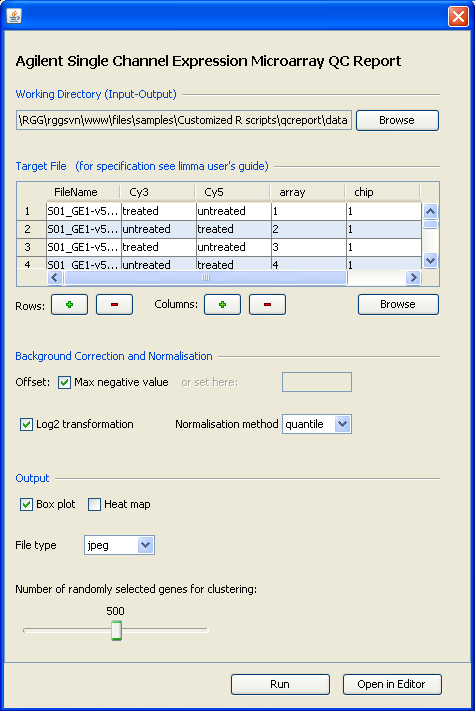

Welcome to RGG!
RGG is a GUI generator for R scripts. RGG consists of an XML based GUI definition language and a Java based GUI engine. GUIs are generated in runtime from defined GUI tags that are embedded into the R script. User-GUI interaction is returned to the R code and replaces the XML-tags. RGG can be used with JGR (Java GUI for R) or as stand-alone software, and can be integrated to any software supporting R. The RGG project will further include the development of a web-based repository for R GUIs being developed by community.
RGG is available as standalone software (RGGRunner) and as an R package to be used with JGR. Here is a RGG-GUI and the corresponding R script:

setwd("C:/inputs")
require(limma); require(gdata); require(pamr)
targetfile = readTargets("Targets.txt")
G = read.maimages(targetfile[,1],columns = list(G = "gMeanSignal", Gb = "gBGUsed",
R = "gProcessedSignal", Rb ="gIsPosAndSignif")
annotation= c("Row", "Col", "FeatureNum", "ProbeUID", "ControlType",
"ProbeName", "GeneName", "SystematicName"))
Gbc <- backgroundCorrect(G, offset=(max(G$Gb-G$G)+1))
norm <- normalizeBetweenArrays(log2(Gbc$G), method='quantile')
postscript('boxplots.ps')
par(mfrow=c(1,2))
boxplot(log2(G$G)~col(G$G), names=paste(G$targets$chip, G$targets$array,
sep='_'), las=2, main='before Normalisation')
boxplot(norm~col(norm), names=paste(G$targets$chip, G$targets$array, sep='_'),
las=2, main='after Normalisation')
dev.off()
postscript('hm.ps')
heatmap(norm[sample(1:nrow(norm), 5000), ], cexCol=0.5, labCol=as.character(G$targets$pat))
dev.off()
postscript('pc12.ps')
plot(prcomp(t(norm))$x[,1:2], col=as.numeric(G$targets$pat))
dev.off()